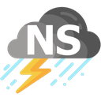

Feb 202724 – 26
ASCE · EWRI
Advancing the practice of stormwater modeling.
We bring together engineers, researchers, software developers and educators to define best practices, share open resources and build the next generation of tools that communities rely on to manage stormwater.
Who we are
A tool-neutral community of practice for everyone who models urban water.
The Stormwater Modeling Committee is a technical committee of the Urban Water Resources Research Council (UWRRC) within ASCE’s Environmental & Water Resources Institute. Our members work across consulting firms, universities, public agencies and software developers.
We welcome every modeling platform, from SWMM and HEC-RAS to InfoWorks ICM and HydroCAD. What unites us is a commitment to models that are transparent, reproducible and worthy of the decisions built on them.
Collaboration
Connecting practitioners, academics, regulators and developers to work on shared problems through focused task committees.
Education
Publishing guidance, recording tutorials and running workshops that lower the barrier to entry and raise the bar for practice.
Innovation
Advancing open engines, testing standards, real-time control and AI-assisted workflows that move the field forward.
Current initiatives
Task committees doing the work
Each initiative is led by committee volunteers and produces practical deliverables: standards, test suites, guidance and training. Every one of them welcomes new contributors.
Active
Design Storm Standards
Toward a national standard for design storms: shaping hyetographs that conform to NOAA Atlas 14/15 at every duration and retiring outdated SCS distributions.
Led by Mitch Heineman
Active
SWMM Testing Protocol
A version-controlled benchmark suite any SWMM engine or fork can run to demonstrate it reproduces the reference hydrology and hydraulics.
Led by Bryant McDonnell
Active
Real-Time Systems
Guidance for coupling models with sensors, forecasts and control logic so stormwater infrastructure can respond during the storm, not after it.
Led by Robert Dickinson
Active
Teaching Tools
Open training material for the next generation of modelers: video tutorials, workshops, example models and an online SWMM reference manual.
Led by Michael Gregory & Scott Jeffers
Knowledge hub
Learning & modeling resources
A curated set of references, software and learning material recommended by committee members.
Official
 Journal
Journal
EPA SWMM
Downloads, manuals and release notes for the Storm Water Management Model.
Source codeSWMM on GitHub
The USEPA reference source code for the SWMM computational engine.
Next generationSWMM6 · HydroCouple
Open-source SWMM 6.0 and the HydroCouple framework for linking water models into one system.
CommunityOpenSWMM
Community hub for the open SWMM ecosystem: documentation, knowledge base and training.
Open sourceOpen-Source SWMM
Resources and updates on open-source SWMM engine development and community tools.
PythonPySWMM
Python interface to SWMM for scripting, automation and real-time control studies.
TutorialsSWMM5.org
Robert Dickinson’s free SWMM5 tutorials, ICM Ruby scripts and interactive modeling tools.
Knowledge baseSWMM Second Brain
Bob Dickinson’s linked wiki of SWMM5, SWMM6 and ICM model comparisons, findings and notes.
Journal of Water Management Modeling
Peer-reviewed, open-access journal on stormwater and water management modeling.
ArticlesMel Meng on Medium
Practical articles on hydraulic modeling, automation and modeling workflows.
DocumentationBentley SewerGEMS SWMM
Reference pages for the SWMM solver as implemented in Bentley SewerGEMS.

RainfallNetSTORM
Rainfall analysis software for IDF statistics, event analysis and design storms.
Events
Where to find us
Conferences where committee members present, convene and host sessions. Come say hello, or bring your own work.
Mar 20271 – 5
ASCE2027: The Infrastructure & Engineering Experience
Includes the 2027 EWRI Congress · committee hybrid meetingMay 202723 – 26
ASFPM Annual National Conference
Jun 20276 – 11
17th International Conference on Urban Drainage (ICUD)
Aug 20278 – 11
EWRI Modeling Confluence
Abstracts due December 9, 2026 · committee hybrid meetingAug 202724 – 26
StormCon 2027
Recently (2026): 59th ICWMM, Toronto · International LID Conference, Jacksonville · EWRI Congress, Mobile, AL, with our “Modeling Momentum” SWMM & EPANET workshop · 12th Novatech, Lyon · Watershed Management, Reston · StormCon, Minneapolis · WEFTEC, New Orleans · Villanova Urban Stormwater Partnership Symposium, Philadelphia (about 300 attendees) · AWRA Water Resources Conference, Philadelphia.
Member activity
What members are up to
New papers, open-source releases and videos from committee members, gathered automatically from public sources.
Updated automatically every day
See all member activity
Committee record
Meeting notes
Summaries, decisions and action items from our committee meetings, prepared with AI assistance.
Nov19
Committee meeting · November 19, 2026
SWMM6 and the Opportunity Fund, vendor-neutral model benchmarking, ASCE AI RACE, and a Modeler Minute on urban flooding in Baltimore.
Apr28Committee meeting · April 28, 2026 · EWRI Congress, Mobile, AL
The Open SWMM initiative, SWMM6 progress, the “Modeling Momentum” SWMM & EPANET workshop, and a new Technical Liaison.
Feb12Committee meeting · February 12, 2026
New officers, a tool-neutral charter, and three new task committees: design storms, SWMM testing and teaching tools.
People
The committee
Committee officers organize meetings and support the task committees. The direction of the committee comes from its members.

Erica McKenzie
Ph.D., Associate Professor, Temple University
Michael Gregory
Water Resources Engineer, CHI
Scott Jeffers
President, Anthropocene Engineering
Haseeb Payab
Drexel University
Past chairs & advisors
Dayton Marchese
P.E., OptiRTC
David J. Sample
Ph.D., P.E., Professor, Virginia Tech
Robert Traver
Ph.D., P.E., Professor, Villanova University
Shirley Clark
Ph.D., P.E., Distinguished Professor, Penn State Harrisburg
Content contributors
Robert (Bob) Dickinson
Water Technologist, Autodesk
Mitch Heineman
Collection Systems Leader, CDM Smith
Bryant McDonnell
Principal, Hydroinformatics LLC
Committee members
46 members- Elie George ArajP.E., C.Eng, BC.WRE, M.ASCE
- Tom BatroneyP.E., M.ASCE
- Azadeh Akhavan Bloorchian-VerschuylPh.D., A.M.ASCE
- Angela Marie BrackbillA.M.ASCE
- Robert Walter CarrP.E., M.ASCE
- Daniel ChristianP.E., BC.WRE, M.ASCE
- Shirley E. ClarkPh.D., P.E., BC.WRE, F.EWRI, F.ASCE
- Robert Edgar Dickinson, Jr.EIT, A.M.ASCE
- Thomas Andrew EarlesM.ASCE
- Ali EbrahimianPh.D.
- Elizabeth Anne Fassman-BeckPh.D., M.ASCE
- David Fortune
- Michael Gregory
- Saki HandaP.E., ENV SP, M.ASCE
- Mitchell Cary HeinemanP.E., BC.WRE, M.ASCE
- Ruth Ayn HockerP.E., R.Eng, BC.WRE, M.ASCE
- Ben R. Hodges
- Shawn HuangAff.M.ASCE
- Scott Jeffers
- Stephanie Johnson
- Ari Jong-LevingerSCCWRP
- Bill Lucas
- Dayton MarcheseP.E.
- Gary Dean MartensP.E., M.ASCE
- Arash MassoudiehAff.M.ASCE
- Bryant McDonnell
- Erica R. McKenzie
- Daniel E. MedinaPh.D., P.E., M.ASCE
- Thomas Patrick O'ConnorP.E., F.ASCE
- Haseeb Payab
- Linda D. PechacekP.E., F.EWRI, M.ASCE
- Aaron PoreskyP.E.
- Marcus Mahan QuigleyP.E., BC.WRE, M.ASCE
- Christopher J. RanckP.E., BCEE, ENV SP, BC.WRE
- Robert John RyanPh.D., P.E., BC.WRE, M.ASCE
- K. Majid SadeghiPh.D., P.E., BC.WRE, M.ASCE
- Aly SalemS.M.ASCE
- David James SamplePh.D., P.E., BC.WRE, M.ASCE
- Kody SchoutenM.Eng, P.E., CFM
- Michelle SimonPh.D., P.E.
- David William SpelmanPh.D., P.E., M.ASCE
- Scott StruckPh.D., F.EWRI, M.ASCE
- Robert Guy TraverPh.D., P.E., BC.WRE, F.EWRI, F.ASCE
- Bridget WadzukPh.D., A.M.ASCE
- Thomas Michael WalskiPh.D., P.E., F.EWRI, F.ASCE
- K. Zhang
Get involved
Help shape the future of stormwater modeling.
We welcome new members at every career stage, from students and researchers to consultants, software developers and agency reviewers.
- Join a task committee and help produce a real deliverable
- Present a Modeler Minute at an upcoming meeting
- Contribute tutorials, benchmark models or data sources